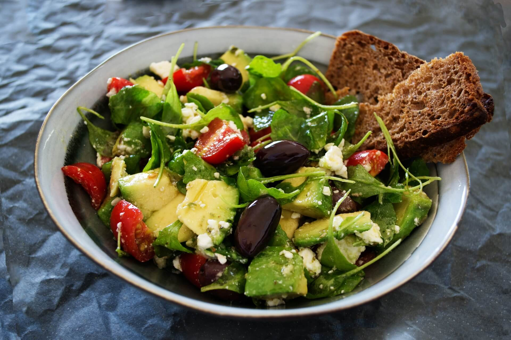
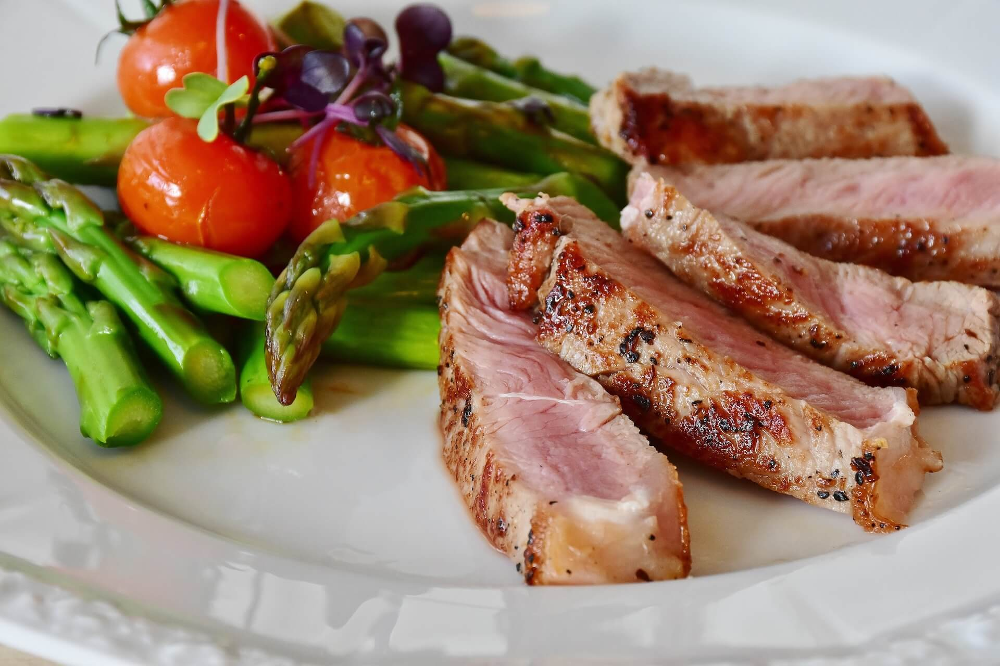

Everything You Need to Know About Calories and Weight Loss Menu Plan
As we get older, losing the pounds gets harder and harder. We’ve all been there: one good vacation, one busy festive season, and it seems like we have a layer of fat around our body that becomes harder to shed as the years go by. This is why what we put into our bodies is important and can make all the difference to your weight loss journey.
November 11, 2023
What are Calories?
Understanding calories is the first step to creating a balanced lifestyle and living healthier. Calories are the energy units that our bodies take from food and beverages that we eat and drink throughout the day. All food and drinks have different caloric amounts and will supply us with different amounts of energy.
Each person’s day is different; our physical exertion is different, and thus, we need different caloric amounts to survive. Ladies of our age should aim to eat between 1,600 and 2,000 calories in a typical day. Essentially, weight loss comes down to a delicate balance between consumed and expended calories.
To further understand calories and the necessity of a balanced diet to lose weight, we need to understand macronutrients. These are carbohydrates, proteins, and fats. Each of these macronutrients contains a certain amount of calories.
Carbs and protein provide about 4 calories per gram, whereas fats have around 9 calories per gram. When you’re crafting your weight loss plan, you need to keep these numbers in mind to create a balanced plan that keeps you full and allows you to lose weight.
How Many Calories per Day to Lose Weight?
The answer to this question is different for everybody. It’s not a simple one-size-fits-all metric and needs to be personalized according to each person’s needs. Your caloric amount will be determined by age, weight, height, activity level, and metabolism. As we’ve previously said, the average amount of calories for women between 25 and 39 is around 2,000 calories. It’s best to either speak to your doctor or use a calorie calculator to determine what’s best for your age, weight, height, preferences, etc.
To lose weight, we need a calorie deficit of around 500 to 1,000 calories a day. This will allow for a safe and sustainable weight loss of 1 to 2 pounds per week. Keep in mind that there is a point where eating fewer calories will become dangerous to our health, and it is recommended to stay within 1,200 to 1,500 calories a day.
Weight Loss Menu Plan
The first step towards sustainable weight loss is a balanced menu plan. One that provides you with all the necessary macronutrients to keep you healthy but with a caloric deficit high enough to allow you to lose weight.
It’s essential to incorporate a range of fruits and vegetables, lean proteins, whole grains, and healthy fats into every meal. Another important factor to consider is portion size. Make use of smaller plates, listen to your body’s hunger and fullness cues, and be mindful of every bite.
Here is a sample meal plan:
Breakfast (300 - 400 calories)
Whole grain toast with avocado
Greek yogurt with berries
Black coffee or herbal tea
Snack (100 - 150 calories)
Handful of almonds or walnuts
Apple slices with peanut butter
Lunch (400 - 500 calories)
Grilled chicken or tofu salad with a variety of colorful
vegetables
Quinoa or brown rice as a side
Water or herbal tea
Afternoon Snack (100 - 150 calories)
Carrot and cucumber sticks with hummus
Green tea
Dinner (500 - 600 calories)
Baked salmon or lentil stew
Steamed broccoli and sweet potato
Water or infused water with lemon and mint
Evening Snack (100 - 150 calories)
Low-fat cottage cheese with pineapple
Chamomile tea
Conclusion
By following the principles of this plan, you can create a meal plan for every day that is delicious and nutritious and helps you get to your weight loss goal. Always remember to think about every bite you take and ensure that it’s helping you live a fuller, healthier life.